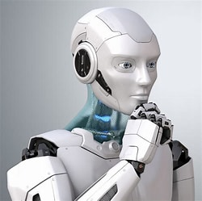
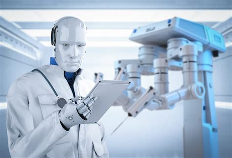

Explore the latest in robotics technology and innovation.

We are passionate about robotics and aim to advance the field through our projects and research. Applications of Robotics Manufacturing: Automation of production lines for efficiency and precision. Healthcare: Assistive devices, surgical robots, and telemedicine. Agriculture: Precision farming, crop monitoring, and harvesting automation. Entertainment: Animatronics, interactive exhibits, and gaming. Exploration: Space probes, underwater exploration, and disaster response. Logistics: Automated warehousing, autonomous delivery, and inventory management.

Developing robots that can navigate and perform tasks independently. 1. Types of Robots Industrial Robots: Used in manufacturing and production lines for tasks like welding, painting, and assembly. Service Robots: Assist in tasks like cleaning, delivery, and customer service in various industries. Medical Robots: Assist in surgeries, rehabilitation, and patient care. Military Robots: Used for surveillance, bomb disposal, and other defense-related tasks. Humanoid Robots: Designed to mimic human appearance and behavior for interaction and assistance. Autonomous Robots: Capable of performing tasks independently using sensors and AI.
Integrating artificial intelligence to enhance robotic capabilities.\ AI-Powered Robots: AI and robotics are merging to create intelligent machines capable of performing complex tasks autonomously. Companies like Tesla, Boston Dynamics, and Hanson Robotics are leading the way with robots that can walk, talk, and interact with their environment. Google DeepMind's AutoRT: This system uses large foundation models to train robots for real-world tasks. AutoRT combines a Visual Language Model (VLM) and a Large Language Model (LLM) to help robots understand their environment and perform diverse tasks. Humanoid Robots: Humanoid robots like Sophia, developed by Hanson Robotics, are designed to mimic human expressions and interactions. These robots can recognize faces, talk, and respond to various situations. Industrial Automation: Advanced robotics is revolutionizing industries by automating complex tasks with precision. This includes applications in manufacturing, healthcare, and logistics. These advancements are pushing the boundaries of what robots can do, making them more capable and versatile in various fields.